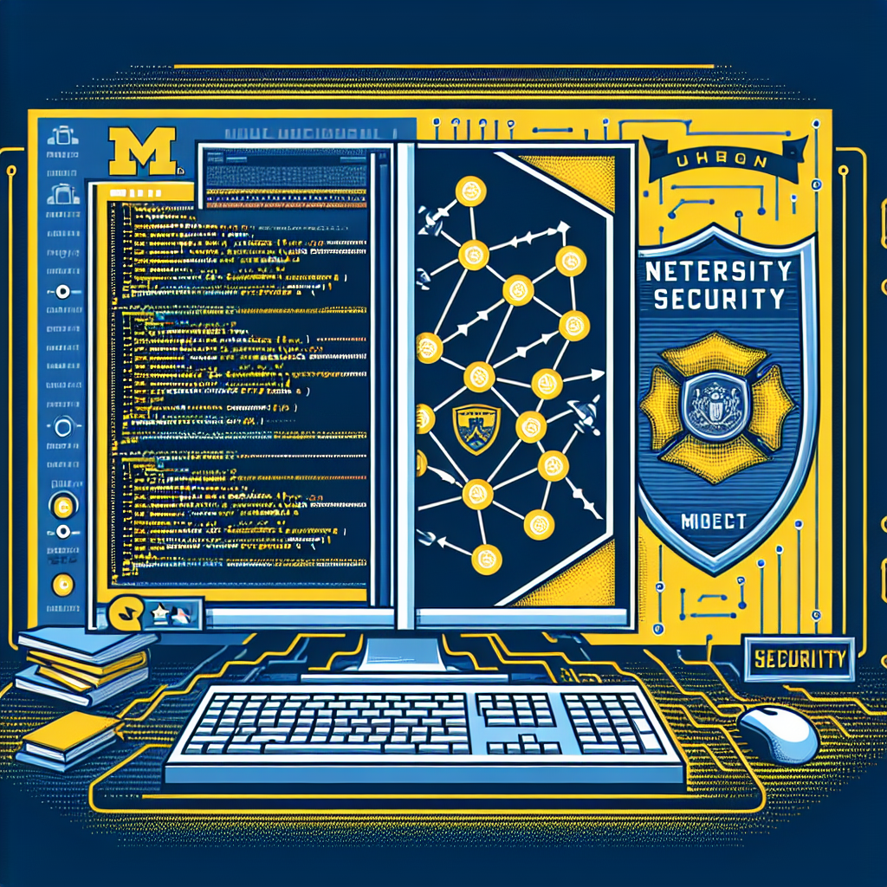
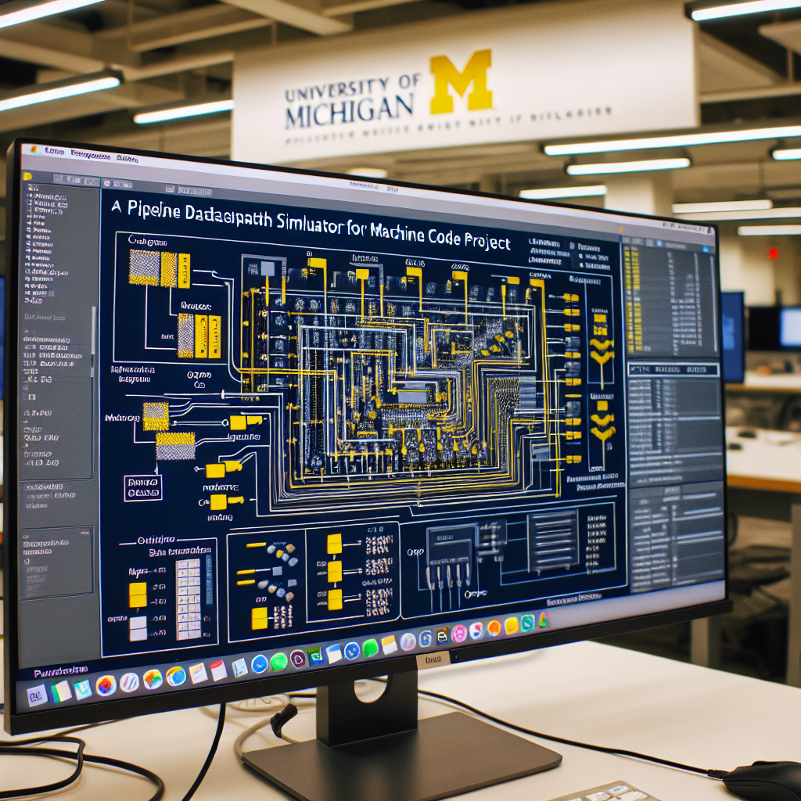
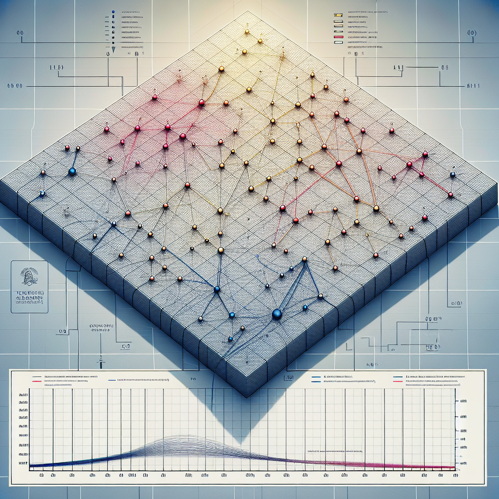

Projects
Below is a small sampling of some of my more notable projects that I wish to share with the world. If you would like to see the other projects that I have not listed here, please reach out to me with the form on 'Main'.
EECS 388 - Cryptography

In this project, I investigated vulnerable applications of cryptography, inspired by security problems found in the real world. Such attacks looked into are Length Extension Attacks, Hash Collisions, Padding Oracle Attacks, and RSA Signature Forgery.
EECS 388 - Web Project
In this project, we are provided with an insecure website and our job is to attack it by exploting three common classes of vulnerabilities. These vulnerabilities being SQL Injections, Cross-Site Scripting (XSS), and Cross-Site Request Forgery (CSRF).
EECS 388 - Networking Project
In this project, we are investigating a recent cyber attack against a network and figuring out how it happened. During this project, we gain exposure to core network protocols and concepts and understand offensive techniques that allowed for this breach to happen.
EECS 388 - AppSec Project
In this project, we are given a series of targets with the general goal of learning control-flow hijacking vulnerabilities in application software through the use of buffer overflows. All of the targets build off of each other and become increasingly difficult to cause a buffer overflow the further you go.
EECS 388 - Forensics Project
In this project, we play the role of a forensic analyst and investigate the theft of company secrets by following the clues left behind by the attacker and using all of the lessons we have learned throughout the course to develop a case to figure out who the guilty culprit is.
EECS 370 - Assembler
In this project, we are given the goal of constructing a instruction set architecture unique to the University of Michigan called LC2K, made specifically for EECS 370. We are also asked to design an LC2K toolchain and simulator to ensure correctness of our code.
EECS 370 - Advanced Assembler & Linker
In this project, we are given the goal of constructing a much more advanced version of the LC2K architecture with additional commands and capabilities that it did not have prior. We are also asked to design a linked so that we use multi-file LC2K programs with our assembler rather than only using one file and one file only.
EECS 370 - Pipelined Datapath Simulator
In this project, we are given the goal of designing a pipelined version of the LC2K architecture to allow for a much more optimal runtime than before. We also implement data forwarding capabilites as well as a simple branch prediction algorithm to the pipeline as well.
EECS 370 - Data & Memory Cache Simulator
In this project, we are given the goal of designing a cache for use in our pipelined LC2K architecture to allow for quicker memory lookups and better runtime in general due to how processors usually follow patterns. Through this project, we also learn how a caching processor generates and services address references.
EECS 280 - Euchre Project
In this project, we are given the goal of developing a digital version of Euchre, a card game popular in Michigan. The game allows for both human players as well as AI players.
EECS 280 - Computer Vision
In this project, we are asked to develop code that allows a user to resize an image through a seam-carving algorithm.
EECS 281 - Optimization Algorithms
In this project, we are asked to develop multiple optimization algorithms such as the Traveling Salesperson algorithm and the knapsack algorithm.